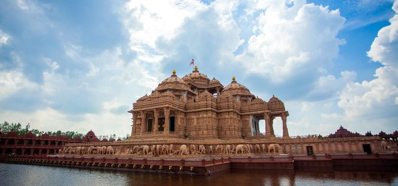
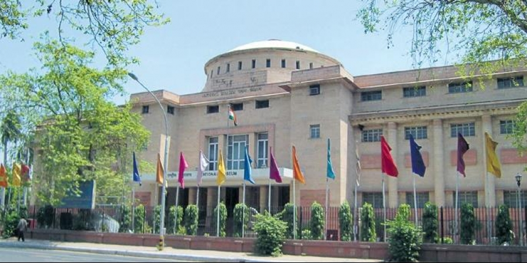

Dilli Haat
An open air food plaza and craft bazaar, a triumphant spot of people’s gatherings and their chatters is Dilli Haat in Delhi which is a venture of Delhi Tourism and Transportation Development Corporation. Dilli Haat is quite unlike the other markets in the area. It is permanent and open all days. The exact location of it is the commercial centres of South Delhi opposite to the INA market. The complex is situated in an area of 6 acres and it came into existence as a part of the reclamation project and then transformed into a plaza.
The plaza extends a firm foundation work, many small thatched roof cottages and kiosks. Some shops here are there for permanent while some others are rotated usually for fifteen days. From fabrics to sculptures, the items you get here are prominently costly in big shops. Here you will get rosewood and sandalwood carvings, embellished camel hide footwear, soft fabrics and drapery, beads, brassware, metal crafts, silk clothes etc. Handlooms and handicrafts are also a dedicated collection at this market which are exhibited in the exhibition hall in the complex.
To sell the commodities, one should follow an application process and spaces are allocated according to which state the seller belongs to. Dilli Haat, thus, has hundreds of stalls allotted to sellers on a rotational basis and the payment would be from INR 100 per day for a period of 15 days. Now it is also a venue of crafts, music, dance and cultural events held by different organizations.
Dilli Haat entry timings:It is open on all days from 10:00 am to 10:00 pm.
Dilli Haat entry fee:There will be a nominal entry fee to be paid.
Dilli Haat location:Sri Aurobindo Marg, Laxmi Bai Nagar, New Delhi, Delhi 110023.
Insider Tips:Delhi Monuments
1. India Gate

2. Rashtrapati Bhavan

3. Red Fort

4. Qutub Minar

Delhi Temples
1.Bahai (Lotus) Temple

2. Akshardham Temple
Delhi Museums
1. Garden of Five Senses

2. National Museum
Delhi Markets, Food & Entertainment Zones
1. Chandni Chowk

2. Hauz Khas

3. Connaught Place